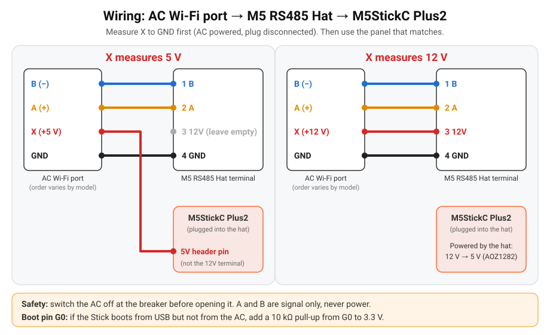
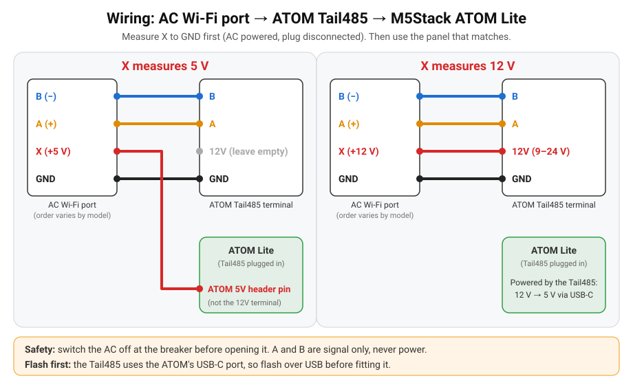

1Qual é a tua placa?Which board do you have?
Marca: Hisense (ficha do módulo Wi-Fi AEH-W4x / AEH-W41H1). Brand: Hisense (AEH-W4x / AEH-W41H1 Wi-Fi module port). Outras marcas:Other brands: ajuda-nos a testarhelp us test.
O meu AC é compatível?Is my AC supported?
Vê a lista de máquinas testadas. Experimentaste noutra? Conta-nos como correu, mesmo que não funcione.Check the list of tested units. Tried another one? Tell us how it went, even if it didn't work.
Lista de compatibilidadeCompatibility list · Reportar o meu ACReport my AC
2Instalar o firmwareInstall the firmware
- Liga a placa a este computador com um cabo USB-C de dados. Faz isto antes de encaixar o Tail485, que tapa a porta USB-C.
- Carrega em Instalar, escolhe a porta série e depois Install.
- Connect the board to this computer with a USB-C data cable. Do this before fitting the Tail485, which covers the USB-C port.
- Press Install, pick the serial port, then Install.
✅ Deves ver: uma nova porta série na lista, depois uma barra de progresso (cerca de 1 minuto) e Installation complete.You should see: a new serial port in the list, then a progress bar (about 1 minute) and Installation complete.
A placa não aparece na lista?Board not showing up?
Instala o driver USB e volta a ligar a placa:
Install the USB driver, then reconnect the board:
- M5StickC Plus2 (chip CH9102):M5StickC Plus2 (CH9102 chip): driver na página da M5Stackdriver on the M5Stack page (secçãosection USB Driver).
- ATOM Lite (driver FTDI):ATOM Lite (FTDI driver): FTDI VCP driver (também naalso on the página da M5StackM5Stack page).
Continua sem nada? Experimenta outro cabo USB-C: muitos só carregam.
Still nothing? Try another USB-C cable: some cables only charge.
Reinstalar mantém o teu Wi-Fi: numa placa que já tem este firmware o instalador oferece Update, que não apaga nada. A primeira instalação apaga a placa.
Reinstalling keeps your Wi-Fi settings: on a board that already runs this firmware the installer offers Update, which does not erase it. A first install erases the board.
3Wi-Fi
- Na mesma janela escolhe a tua rede, escreve a palavra-passe e carrega em Connect. Tem de ser uma rede de 2,4 GHz.
- Saltaste este passo? No telemóvel liga-te à rede
ESPHome_AC Setup: abre-se uma página para escolher o Wi-Fi. Volta a aparecer sempre que a placa não encontra o Wi-Fi. - Também podes configurar o Wi-Fi por Bluetooth (Improv) na app do Home Assistant.
- In the same window pick your network, type the password and press Connect. It must be a 2.4 GHz network.
- Skipped it? From your phone join the
ESPHome_AC Setuphotspot: a page opens to pick your Wi-Fi. It comes back whenever the board can't reach its Wi-Fi. - You can also set Wi-Fi over Bluetooth (Improv) from the Home Assistant app.
✅ Deves ver: a linha de baixo do ecrã deixa de dizer Wi-Fi: join "ESPHome_AC Setup" e mostra o endereço IP (No AC é normal até ligar ao ar condicionado).You should see: the bottom line of the screen stops saying Wi-Fi: join "ESPHome_AC Setup" and shows the IP address (No AC is normal until it is wired).
✅ Deves ver: o LED passa de azul (configurar Wi-Fi) a vermelho (Wi-Fi OK, ar condicionado ainda não ligado).You should see: the LED turns from blue (Wi-Fi setup) to red (Wi-Fi OK, AC not connected yet).
4Ligar ao ar condicionadoWire it to the AC
⚠️ Desliga primeiro o ar condicionado no disjuntor. A unidade interior tem tensão da rede lá dentro.Switch the AC off at the breaker first. The indoor unit has mains voltage inside.
- Abre a tampa da unidade interior e desliga o módulo Wi-Fi original. Fica uma ficha de 4 fios: A, B, GND e X (alimentação).
- Liga os 4 fios à placa como no esquema e na tabela abaixo.
- Volta a ligar o disjuntor.
- Open the indoor unit's cover and unplug the original Wi-Fi module. You are left with a 4-wire plug: A, B, GND and X (power).
- Connect the 4 wires to the board as in the diagram and table below.
- Switch the breaker back on.

Não sabes se a tua ficha é de 5 V ou 12 V?Not sure if your plug is 5 V or 12 V?
Mede uma vez com um multímetro (volts DC):
Measure it once with a multimeter (DC volts):
- Desliga o ar condicionado no disjuntor e desliga o módulo Wi-Fi original.
- Encosta as pontas do multímetro aos fios X e GND da ficha, com as mãos longe de tudo o resto, e liga o disjuntor.
- Cerca de 5 V ou cerca de 12 V diz-te que coluna da tabela usar.
- Volta a desligar o disjuntor antes de ligar a placa.
- Switch the AC off at the breaker and unplug the original Wi-Fi module.
- Put the multimeter probes on the plug's X and GND wires, keeping your hands away from everything else, then switch the breaker on.
- About 5 V or about 12 V tells you which column below to use.
- Switch the breaker off again before connecting the board.
A ordem dos fios varia com o modelo;Pin order varies by model; docs/wiring.md explica como encontrar cada fio.explains how to find each wire.


| Ficha do ACAC plug | X = 5 V | X = 12 V |
|---|---|---|
| A (+) | Hat terminal 2 | |
| B (−) | Hat terminal 1 | |
| GND | Hat terminal 4 | |
| X | Pino 5V do Stick (terminal 3 vazio)Stick 5V header pin (terminal 3 empty) | Hat terminal 3 (12V) |


✅ Deves ver: OK verde no canto superior direito do ecrã e a temperatura da sala, em menos de um minuto.You should see: green OK at the top right of the screen and the room temperature, within a minute.
Pino de arranque G0: se o Stick arranca por USB mas não pelo ar condicionado, põe uma resistência de 10 kΩ entre o G0 e os 3,3 V. Se o ecrã mostrar No AC, troca o A com o B. Boot pin G0: if the Stick boots from USB but not from the AC, add a 10 kΩ pull-up from G0 to 3.3 V. If the screen shows No AC, swap A and B.


| Ficha do ACAC plug | X = 5 V | X = 12 V |
|---|---|---|
| B (−) | Tail485 B | |
| A (+) | Tail485 A | |
| GND | Tail485 GND | |
| X | Pino 5V do ATOM (12V do Tail485 vazio: precisa de 9–24 V)ATOM 5V header pin (Tail485 12V empty: it needs 9–24 V) | Tail485 12V |


✅ Deves ver: o LED fica verde em menos de um minuto.You should see: the LED turns green within a minute.
LED: azul = configurar Wi-Fi, vermelho = sem ligação ao AC (troca o A com o B), verde = OK (apaga-se após 30 s; carrega no botão para o ver de novo). Botão carregado 10 s = reposição de fábrica. LED: blue = Wi-Fi setup, red = no AC link (swap A and B), green = OK (turns off after 30 s; press the button to see it again). Hold the button 10 s for a factory reset.
5Home Assistant
Definições → Dispositivos e serviços: aparece Air Conditioner (ESPHome; Hisense AC em placas instaladas antes da v0.3.0) → Configurar. Testa: põe o Air Conditioner em Cool a 24 °C.
Settings → Devices & services: Air Conditioner (ESPHome; Hisense AC on boards installed before v0.3.0) shows up → Configure. Test: set Air Conditioner to Cool at 24 °C.
| Air Conditioner | Modos Off / Cool / Heat / Dry / Fan / Auto, 16–32 °C, 7 velocidades, swing, Eco, Boost, Sleep.Off / Cool / Heat / Dry / Fan / Auto, 16–32 °C, 7 fan speeds, swing, Eco, Boost, Sleep. |
| SensoresSensors | Temperaturas exterior e das serpentinas, compressor, humidade, tensão, potência, energia de hoje (quando a máquina as envia).Outdoor and coil temperatures, compressor, humidity, voltage, power, energy today (when the unit reports them). |
| AC Link · AC Fault | Se a ligação à máquina está bem, e os códigos de avaria.Whether the link to the unit is up, and fault codes. |
| AC Display · Eco · Super | Luz do painel, poupança e turbo.Panel light, eco and turbo. |
| Firmware Update · Auto Update | Novas versões com um clique, ou sozinhas de madrugada.New versions in one click, or by themselves at night. |
✅ Deves ver: uma entidade de clima para o ar condicionado na página do dispositivo.You should see: a climate entity for the AC on the device page.
Atualizações: instalam-se sozinhas de madrugada (desliga o interruptor Auto Update para as instalar à mão na entidade Firmware Update). Página do aparelho: http://<ip>/ (estados e logs, sem palavra-passe, só na rede local).
Cartão de painel pronto e aviso de atualização: docs/home-assistant.md.
Updates: they install by themselves at night (switch Auto Update off to install them yourself from the Firmware Update entity). Device page: http://<ip>/ (states and logs, no password, LAN only).
Ready-made dashboard card and update notification: docs/home-assistant.md.
?ProblemasTroubleshooting
O ecrã diz No AC ou o LED fica vermelhoThe screen says No AC or the LED stays red
Troca o A com o B (é seguro: só levam sinal). Confirma o GND e que a placa fica ligada sem o USB.
Swap A and B (safe: they only carry signal). Check GND and that the board stays on with USB unplugged.
O Stick funciona por USB mas não pelo ar condicionadoThe Stick works on USB but not from the AC
Põe uma resistência de 10 kΩ entre o G0 e os 3,3 V. O ATOM não tem este problema.
Add a 10 kΩ resistor from G0 to 3.3 V. The ATOM is not affected.
O Home Assistant não encontra a placaHome Assistant doesn't find the board
Tem de estar na mesma rede (sem rede de convidados). Adiciona-a à mão: integração ESPHome → o IP da placa, porta 6053.
It must be on the same network (not a guest network). Add it by hand: ESPHome integration → the board's IP, port 6053.
A página do aparelho não abreThe device's web page doesn't open
Escreve http:// e o IP, por exemplo http://192.168.1.50/. Não existe https://.
Type http:// and the IP, for example http://192.168.1.50/. There is no https://.
Mudar de Wi-Fi ou repor de fábricaChange Wi-Fi or factory reset
Sem o Wi-Fi antigo, a placa abre a rede ESPHome_AC Setup após cerca de um minuto. Reposição: ATOM, botão 10 s; ou por USB aqui → Erase User Data.
Without its old Wi-Fi, the board opens the ESPHome_AC Setup hotspot after about a minute. Reset: ATOM, hold the button 10 s; or by USB here → Erase User Data.
Todos os problemasAll troubleshooting · Guia completoFull guide · Pedir ajudaAsk for help